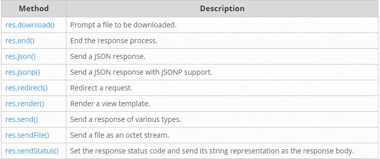

Rutas en ExpressJS
Basic Routing
El direccionamiento básico hace referencia a cómo responde una aplicación a una solicitud de cliente en un punto final en concreto, que viene a ser un URI (o una zona de acceso) y un método de soliticitud HTTP (GET,POST,PUT,etc).
Hay muchas rutas y cada una puede tener una o varias funciones a tratar.
Una ruta sería algo así como:
app.METHOD(PATH,HANDLER)
Donde distinguimos:
- app es una instancia de express
- METHOD es un método de solicitud HTTP
- PATH sería por donde accede al servidor
- HANDLER es la función que se ejecuta
Se ilustran varios ejemplos con rutas simples:
Aquí responde con un "Hola mundo!" en la página inicial.
app.get('/', function (req, res) {
res.send('Hello World!')
})
El siguiente ejemplo responderá a una solicitud POST en la ruta específicada.
app.put('/user', function (req, res) {
res.send('Got a PUT request at /user')
})
Se ilustran varios ejemplos más que puedes visualizar aquí
Routing Guide
El concepto Routing se refiere a la definición de los puntos finales (URIs) y como responden a las llamadas por los clientes.
Se muestra un ejemplo de una ruta basica:
var express = require('express')
var app = express()
// respond with "hello world" when a GET request is made to the homepage
app.get('/', function (req, res) {
res.send('hello world')
})
Que básicamente lo que haría es responder con "Hola Mundo!" cuando una petición de tipo GET se haga a la página principal.
Route Methods (Métodos de Ruta)
Un método de una ruta proviene de un método HTTP y se adjunta a una función de la clase express.
Podemos ver varios ejemplos usando los métodos GET y POST
// GET method route
app.get('/', function (req, res) {
res.send('GET request to the homepage')
})
// POST method route
app.post('/', function (req, res) {
res.send('POST request to the homepage')
})
Además express da soporte a muchos métodos HTTP que puedes ver aquí
Route Paths (Vías de Acceso)
Las vías de acceso de las rutas pueden ser series, patrones de series o expresiones regulares.
Expondremos un ejemplo de cada tipo de modo ilustrativo.
Series
Esta vía de acceso de ruta coincidirá con las solicitudes a /about.
app.get('/about', function (req, res) {
res.send('about')
})
Patrones de Series
Esta vía de acceso cazará los patronces que coincidan con acd y abcd.
app.get('/ab?cd', function (req, res) {
res.send('ab?cd')
})
Expresiones Regulares
Esta vía de acceso de ruta cazará con cualquier valor que contenga una “a” en el nombre de la ruta.
app.get(/a/, function (req, res) {
res.send('/a/')
})
Si quieres visualizar más ejemplos puedes verlos desde aquí
Route Parameters (Parámetros de Ruta)
Los parámetros de ruta son segmentos URL que se usan para coger los valores especificados en su posición en la URL. Los valores obtenidos se usan con el objeto req.params, con el nombre de la ruta especificada en path así como sus respectivas claves.
Route path: /users/:userId/books/:bookId
Request URL: http://localhost:3000/users/34/books/8989
req.params: { "userId": "34", "bookId": "8989" }
Si queremos definir una ruta con parámetros lo especificariamos en la parte del path de la ruta:
app.get('/users/:userId/books/:bookId', function (req, res) {
res.send(req.params)
})
Para saber más información sobre el uso de las de las rutas con parámetros consultalo aquí
Route Handlers (Controladores de Ruta)
Se pueden proporcionar múltiples funciones que devuelvan las llamadas que se comportan como los middleware para manejar una solicitud. Aunque estas devoluciones de llamada podrían invocar a un next('route') para omitir el resto de las devoluciones de llamada, con este mecanismo podríamos imponer condiciones previas en una ruta y pasar el control a las rutas siguientes si no hay motivo para seguir en la ruta actual.
Los controladores de rutas pueden ser una función, una matriz de funciones o combinaciones de las dos.
Un ejemplo de una devolución de llamada invididual sería:
app.get('/example/a', function (req, res) {
res.send('Hello from A!')
})
Un ejemplo de una devolución de llamada utilizando una matriz de funciones sería:
var cb0 = function (req, res, next) {
console.log('CB0');
next();
}
var cb1 = function (req, res, next) {
console.log('CB1');
next();
}
var cb2 = function (req, res) {
res.send('Hello from C!');
}
app.get('/example/c', [cb0, cb1, cb2]);
Una combinación de ambas usando funciones individuales y matrices de funciones sería:
var cb0 = function (req, res, next) {
console.log('CB0');
next();
}
var cb1 = function (req, res, next) {
console.log('CB1');
next();
}
app.get('/example/d', [cb0, cb1], function (req, res, next) {
console.log('the response will be sent by the next function ...');
next();
}, function (req, res) {
res.send('Hello from D!');
});
Puedes encontrar más información al respecto aquí
Response Methods (Métodos de Respuesta)
Los métodos en el objeto de respuesta res que se muestran en la tabla siguiente se usan para enviar una respuesta al cliente y terminar el ciclo de solicitud/respuestas, aunque si los métodos no son invocados desde un controlador de rutas la solicitud no funcionará.

app.route()
Se pueden crear controladores de rutas para una vía de acceso utilizando app.route().
Un ejemplo usando los controladores de ruta sería:
app.route('/book')
.get(function (req, res) {
res.send('Get a random book')
})
.post(function (req, res) {
res.send('Add a book')
})
.put(function (req, res) {
res.send('Update the book')
})
Si quieres obtener más información acerca de app.route() puedes verlo aquí
express.Router
Se utiliza la clase express.Router para crear controladores de rutas. Una instancia Router es un sistema de middleware y direccionamiento completo por eso se le conoce como "miniapps".
En el siguiente ejemplo se ilustra como crear una "miniapp" con una función de middleware cargada, definiendo algunas rutas y con una vía de acceso a la app principal.
Crea un archivo en la ruta de la aplicación llamado birds.js con este contenido:
var express = require('express')
var router = express.Router()
// middleware function
router.use(function timeLog (req, res, next) {
console.log('Time: ', Date.now())
next()
})
// define the home page route
router.get('/', function (req, res) {
res.send('Birds home page')
})
// define the about route
router.get('/about', function (req, res) {
res.send('About birds')
})
module.exports = router
Entonces cargas el módulo de la ruta en la aplicación
var birds = require('./birds')
// ...
app.use('/birds', birds)
Ahora la aplicación podrá manejar solicitudes a a /birds y /birds/about, así como invocar la función de middleware.